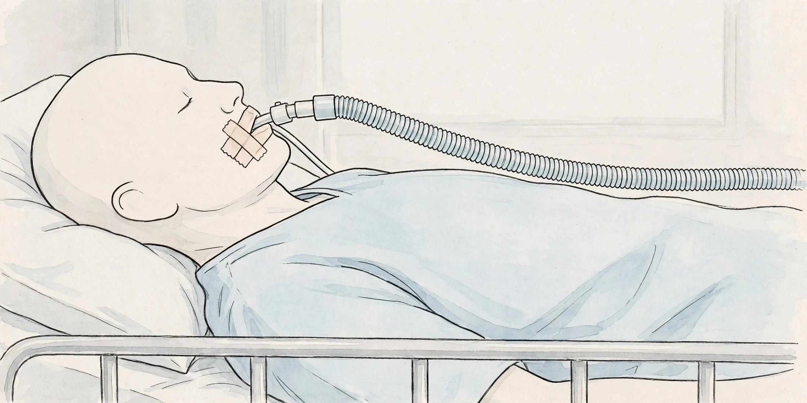
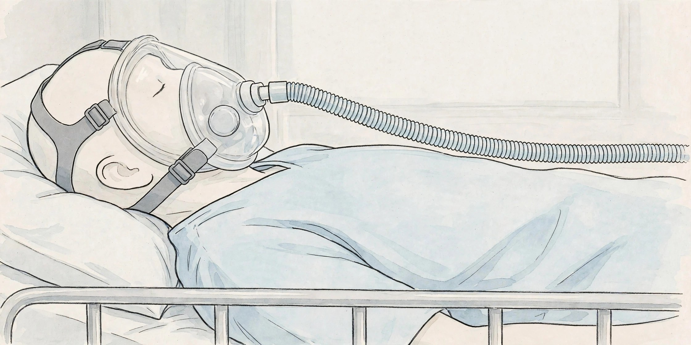

まず触る順番：メーカー → 症例 → モード
モードを選ぶと、波形と患者の反応がその場で変わります。同じ症例のままメーカーを切り替えると、正解のモードの「名前」だけが各社の表記に変わります。
くわしく（選んだモードの仕組み）
モードを選ぶと、そのモードが「何を決めて、何を患者に任せるか」と、メーカーごとの名前の対応がここに出ます。
この症例の例外・注意
症例を選ぶと出ます。
名前の対応表（考え方が同じもの）
メーカー公式資料で確認できた範囲だけを載せています。確認できなかったメーカーは空欄です。
根拠
モード名とメーカー対応は、各メーカー公式サイト・公式データシート・添付文書で確認した範囲に限っています（調査メモ: 2026-11-25）。モードの考え方は「誰が呼吸を決めるか」で整理しています。数値設定の推奨はこのアプリでは扱いません。患者のイラストは生成画像、機器の写真は各メーカー公式サイト・公式資料から取得した実機写真です。